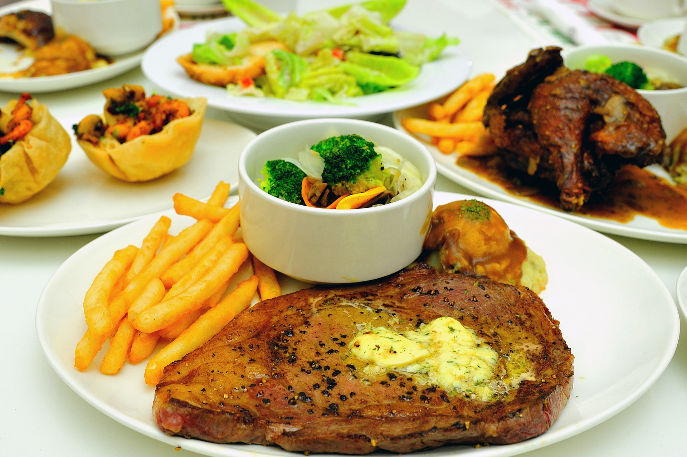

Ngoni's Steak and Chips

Traditional French steak served with chunky potato chips and a creamy pepper sauce.
Inspired By:Michael Caines
Ingredients
- Himalayan Rock Salt
- Black Pepper Corns
- Olive Oil
- Butter
- Heavy Cream
- Vinegar
- Garlic
- Rosemary
- Onion
- Broccoli
- Potatoes
- Sirloin Steak
Recipe Instructions
- Chop potato wedges, onion slices and broccoli florets.
- Season the steak with salt and pepper.
- Boil the wedges in water (add a dash of vinegar and salt).
- Coat the wedges in olive oil and roast them in the oven until they are crispy.
- Sear the steak in a pan with olive oil and ensure that both sides are well browned.
- Baste the steak with butter, garlic and rosemary.
- Rest the steak on a plate.
- Add onion slices to the pan and caramelize (add heavy cream and black
pepper corns for the sauce).
- Lightly steam the broccoli.
- Serve!
Return To Top
Return To Home